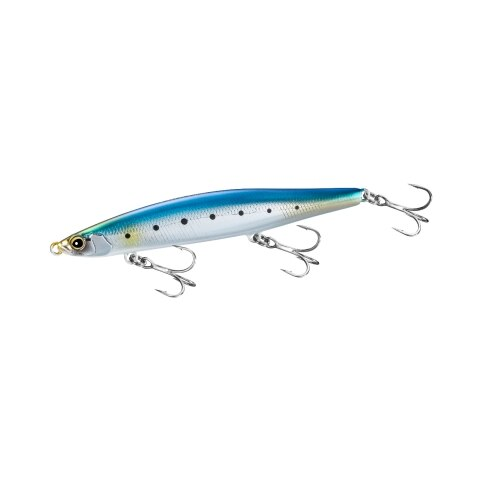
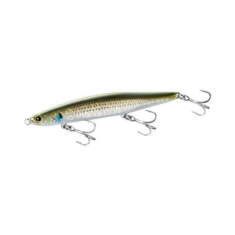
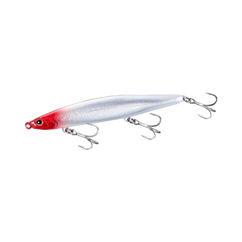
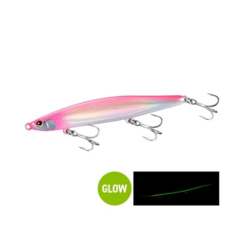

ヒカゲ125S ジェットブースト
（HIKAGE 125S JET BOOST）
ヒカゲ125S ジェットブーストはSHIMANO（シマノ）のヘビーシンキングペンシルです。
場所や時間帯、魚種に縛られず、1つであらゆるシチュエーションに対応するように作られたシンペン。シーバスをはじめフラットフィッシュや青物まで、大型河川からサーフ、磯、ナブラ打ちまで幅広く使えます。2026年9月発売の新製品です。

画像出典:SHIMANO公式HP
スペック
- メーカー
- SHIMANO（シマノ）
- タイプ
- ヘビーシンキングペンシル
- 全長
- 125mm
- 自重
- 40g
- フック
- #4×3
- ターゲット
- シーバス・フラットフィッシュ・青物
- 価格
- 2,400円（税別）
- 発売
- 2026年9月
▼今すぐチェック
ヒカゲ125Sの特徴
飛距離を備えながら、水平姿勢のアクションを追求したヘビーシンペン
-
着水直後から水平姿勢のシミーフォール
ジェットブーストと固定ウェイトを組み合わせたハイブリッド構造で、着水直後から水平姿勢のシミーフォールを始め、すぐにターゲットへアピールします。
-
浮き上がりにくく、足元まで水平
リトリーブ中もルアーが浮き上がりにくく、足場の高い場所でも足元まで水平姿勢のまま自然に誘い続けられます。
-
肉厚ボディと適度な巻き感
ボディは肉厚構造で強度もアップ。適度な巻き感と手感度も重視していて、シンペン特有の「何をしているかわからない」ストレスを減らしています。
ヒカゲ125Sの使い方
基本は遠投してのただ巻き。着水直後から水平姿勢でフォールするので、沈めている間もアピールが続きます。
足場の高い磯や堤防でも浮き上がりにくいので、足元まで丁寧に巻き切ることを意識しましょう。
ヒカゲ125Sの得意な状況
大型河川・サーフ・磯・ナブラ打ちなど、広い範囲を遠投で探りたい場面。荒れ気味のラフな状況や、足場の高い場所でもレンジを保ちやすいのが強みです。デイゲームからナイトゲームまで使えます。
ワンポイント
着水直後から水平姿勢でフォールするので、カウントダウン中も魚に見せている時間になります。ナブラ打ちでは、着水してすぐに巻き始めるだけでなく、少し沈めてから巻くパターンも試してみてください。
40g前後のヘビーシンペンの使い分け
| モデル | 全長／自重 | 得意な場面 |
|---|---|---|
| ヒカゲ125S | 125mm／40g | 水平姿勢のシミーフォールと浮き上がりにくさ。高い足場にも（本記事のモデル） |
| ワイゾン111S | 111mm／40g | 同じシマノのジェットブースト搭載シンペン |
| オーバードライブ107S | 107mm／40g | 大型ベイトパターンやサーフのヒラメに |
| フリッド125S | 125mm／37g | ツインリップで高速フォールと明確な引き抵抗 |
同じ40g前後のシンペンでも、フォール姿勢や引き抵抗、得意なレンジが違います。足場の高さやフィールドに合わせて選び分けましょう。
人気カラー
全10色の中から4色を紹介します。

001 クロムイワシクロムのフラッシングで見せるイワシカラー。デイゲームのサーチに。

003 Aボラインジケーターボラを意識したカラー。ボラがベイトの河川や河口に。

004 ホロレッドヘッドホロのフラッシングとレッドヘッドの定番系。濁りやローライトにも。

009 ピンクバックグローピンクバックにグローを組み合わせたカラー。マズメや夜の釣りに。
画像出典:SHIMANO公式HP
ヒカゲ125Sに似ているルアー
-
 ワイゾン111S ジェットブースト
SHIMANO
詳細はこちら＞
ワイゾン111S ジェットブースト
SHIMANO
詳細はこちら＞
全長111mm・自重40gのシンキングペンシル。同じシマノのジェットブースト搭載ヘビーシンペン。
-
 ジグザグベイト120S
ポジドライブガレージ
詳細はこちら＞
ジグザグベイト120S
ポジドライブガレージ
詳細はこちら＞
全長120mm・自重43gのシンキングペンシル。同じ40gクラスで、S字系の動きで見せたいときに。
-
 バンク120S
POP SEA CREW
詳細はこちら＞
バンク120S
POP SEA CREW
詳細はこちら＞
全長120mm・自重46gのリップ付きシンペン。レンジ20〜100cmを遠投で探りたいときに。